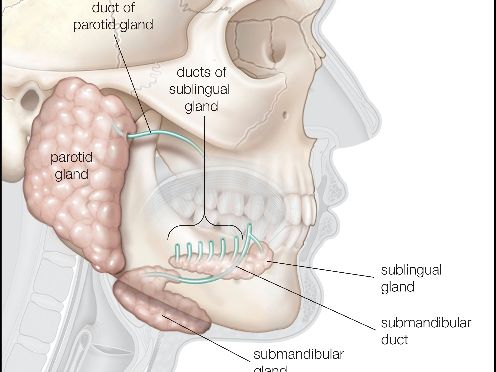

Sialolithiasis

SYMPTOMS:
- Swelling of the affected saliva glands which normally occurs with meals
-
Difficulty opening the mouth
-
Difficulty swallowing
-
A painful lump under the tongue
-
Gritty or strange tasting saliva
Dry mouth
-
Pain and swelling usually around the ear or under the jaw
CAUSES:
- Dehydration
-
Use of medications or conditions which cause dry mouth (diuretics and anticholinergics)
-
Sjorgen's syndrome, lupus, and autoimmune diseases in which the immune system may attack the salivary glands
-
Radiation therapy of the mouth
-
Gout
-
Smoking
-
Trauma
-
DIAGNOSIS:
- An otolaryngologist, or ENT, is a physician qualified to diagnose and treat sialolithiasis. Although doctors in other specialties may also diagnose or treat this condition.
TREATMENT
- The treatment of sialolithiasis depends on where the stone is and how large it is.
-
Small stones may be pushed out of the duct and you may be able to facilitate this by drinking plenty of water, or massaging and applying heat to the area.
-
Large salivary duct stones may be more difficult to remove and sometimes require surgery.